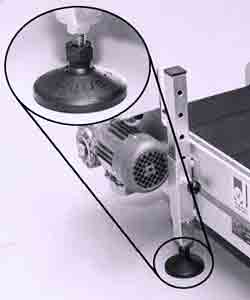

 The A-JUSTA-FOOT™ is a multi-adjustable pedestal foot, ideal for industrial, commercial, workshop or food industry applications.
The special insert in the base helps to absorb vibration and means your machinery will stay exactly where you put it.
A-JUSTA-FOOT™ is available in a large variety of sizes.
Special requirements can often be produced.
To complement the A-JUSTA-FOOT™ range, inserts for round or square tube are available to fit light wall tube.
The inserts are designed especially so they can be turned down to fit heavier walled RHS.
MATERIALS
BASE Glass reinforced Nylon - Black
BALL Glass reinforced Nylon - Black
PAD Synthetic Rubber Shore 73
STUD Mild Steel - Plated or Stainless Steel
NUT Mild Steel - Plated or Stainless Steel
Maximum adjustable angle - 20°
TUBE ENDS Glass reinforced Nylon with Threaded Metal insert